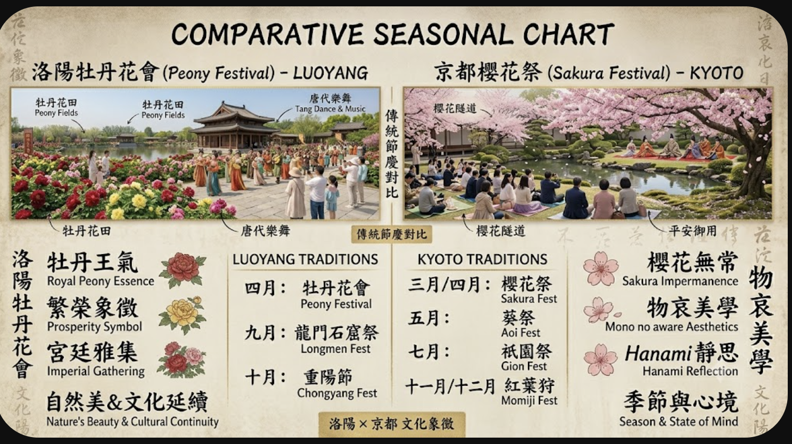

Festivals & Seasonal Traditions
Honoring the ephemeral beauty of nature through the Luoyang Peony Festival and Kyoto's Sakura celebrations.

The Philosophy of Flowering
In both Luoyang and Kyoto, floral festivals are more than mere celebrations; they are rituals of temporal awareness. The peony, celebrated in Luoyang as the "King of Flowers," embodies the opulence and prosperity of imperial Tang culture. Its blooming season is a grand social event, symbolizing stability and the flourishing of the state.
Conversely, the cherry blossom (*sakura*) in Kyoto is a profound expression of Mono no aware (the pathos of things)—a poignant reminder of the beauty found in impermanence. While Luoyang celebrates the fullness of life through the peony, Kyoto embraces the transient nature of existence through the falling petals. Together, these traditions anchor the urban experience in the cycles of the natural world, linking the modern citizen back to the aesthetic sensibilities of their ancestors.
Traditional Seasonal Calendar
| Season | Luoyang Event | Kyoto Event |
|---|---|---|
| Spring | Peony Cultural Festival | Sakura Hanami |
| Summer | Longmen Cultural Week | Gion Matsuri |
| Autumn | Chrysanthemum Show | Jidai Matsuri |